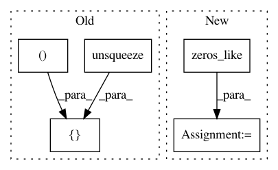

bdd3f2f8f306000f9b0c34e0ec2a86a75cee885b,kornia/feature/laf.py,,ellipse_to_laf,#Any#,193
Before Change
"ellipse shape should be must be [BxNx5]. "
"Got {}".format(ells.size()))
ell_shape = torch.cat([torch.cat([ells[..., 2:3], ells[..., 3:4]], dim=2).unsqueeze(2),
torch.cat([ells[..., 3:4], ells[..., 4:5]], dim=2).unsqueeze(2)], dim=2).view(-1, 2, 2)
out = torch.matrix_power(torch.cholesky(ell_shape, False), -1).view(B, N, 2, 2)
out = torch.cat([out, ells[..., :2].view(B, N, 2, 1)], dim=3)
return out
After Change
// M = (A 0; C D)
// R = (sqrt(A) 0; C / (sqrt(A)+sqrt(D)) sqrt(D))
a11 = ells[..., 2:3].abs().sqrt()
a12 = torch.zeros_like(a11)
a22 = ells[..., 4:5].abs().sqrt()
a21 = ells[..., 3:4] / (a11 + a22).clamp(1e-9)
A = torch.stack([a11, a12, a21, a22], dim=-1).view(B, N, 2, 2).inverse()
out = torch.cat([A, ells[..., :2].view(B, N, 2, 1)], dim=3)
In pattern: SUPERPATTERN
Frequency: 3
Non-data size: 5
Instances
Project Name: arraiy/torchgeometry
Commit Name: bdd3f2f8f306000f9b0c34e0ec2a86a75cee885b
Time: 2020-04-29
Author: ducha.aiki@gmail.com
File Name: kornia/feature/laf.py
Class Name:
Method Name: ellipse_to_laf
Project Name: kymatio/kymatio
Commit Name: 094c57ce94fc70c11032c08ae7322532b02e616b
Time: 2018-11-21
Author: janden@flatironinstitute.org
File Name: scattering/scattering1d/backend/backend_torch.py
Class Name:
Method Name: pad
Project Name: kymatio/kymatio
Commit Name: 094c57ce94fc70c11032c08ae7322532b02e616b
Time: 2018-11-21
Author: janden@flatironinstitute.org
File Name: scattering/scattering1d/backend/backend_skcuda.py
Class Name:
Method Name: pad